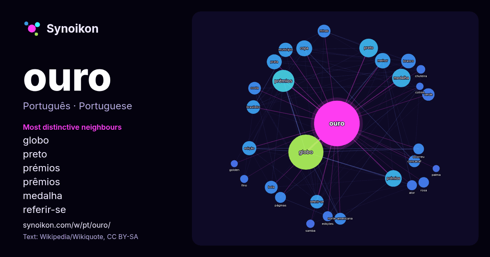

Português · lista de palavras do dia
ouro
“gold” · As palavras encontradas ao seu redor em 1243 ocorrências da Wikipédia, Wikiquote.

Vizinhos mais característicos
- globo 167×
- preto 54×
- prémios 42×
- prêmios 39×
- medalha 36×
- referir-se 36×
- prata 31×
- concacaf 28×
- bola 27×
- branco 25×
- norte-americana 24×
- copa 22×
- verde 22×
- páginas 22×
- minas 20×
- rosa 17×
- edição 17×
- chuteira 16×
- edições 16×
- costa 15×
× = quantas vezes mais do que no texto geral da Wikipédia.
Vizinhos mais frequentes
- globo 248
- prêmios 98
- preto 70
- medalha 68
- prémios 56
- copa 51
- melhor 48
- prata 45
- branco 43
- município 41
- edição 40
- brasileiro 37
- referir-se 37
- bola 33
- minas 33
- costa 32
- verde 31
- concacaf 28
- norte-americana 28
- filme 26
Em contexto
- Para outros significados, veja Ouro (desambiguação). O ouro é um elemento químico com o símbolo Au (do latim aurum 'ouro') e número atômico 79. É um metal Wikipedia snippets · Ouro
- Nota: Para outros significados, veja Ouro Preto (desambiguação). Ouro Preto é um município brasileiro do estado de Minas Gerais, Região Sudeste do país Wikipedia snippets · Ouro Preto
- veja Prémios Globo de Ouro de 2026. Os Prémios Globo de Ouro de 2026 (também conhecidos como a 30.ª edição dos Globos de Ouro) honraram os melhores profissionais Wikipedia snippets · Globos de Ouro de 2026
- Globo de Ouro ou Globos de Ouro pode referir-se a: Prêmios Globo de Ouro — prémios atribuídos anualmente nos Estados Unidos pela Associação de Imprensa Wikipedia snippets · Globo de Ouro
- Nota: Para outros significados, veja Globos de Ouro (desambiguação). Os Globos de Ouro são troféus atribuídos anualmente em Portugal desde 1996 - com Wikipedia snippets · Globos de Ouro (Portugal)
- Os Prêmios Globo de Ouro(pt-BR) ou Prémios Globo de Ouro(pt-PT?) (do inglês, Golden Globe Awards) são premiações anualmente entregues desde 1944 pela Associação Wikipedia snippets · Prêmios Globo de Ouro
- Ciclo do ouro, também referido como ciclo da mineração e corrida do ouro, foi o período da história brasileira em que a extração e exportação do ouro dominou Wikipedia snippets · Ciclo do ouro
- Fernando de Ouro Preto (Curitiba, 27 de abril de 1964), mais conhecido como Dinho Ouro Preto, é um cantor e compositor brasileiro. É o vocalista da banda Wikipedia snippets · Dinho Ouro Preto
Mais palavras
- arte
- ciência
- clima
- comida
- coração
- cão
- deus
- dinheiro
- família
- força
- gato
- história
- língua
- morte
- natureza
- ponte
- saúde
- trabalho
- trem
- verdade
- vida
- água
Pré-calculado em 2026-10-09 com as configurações padrão (±5 palavras, corpus médio). O mapa interativo pode atualizá-lo com dados ao vivo.
Interface traduzida automaticamente; correções são bem-vindas.